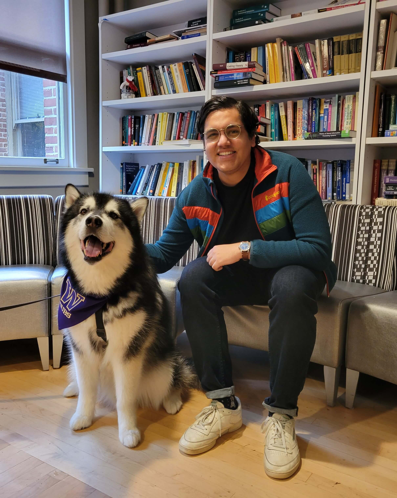

I am currently a Ph.D. student in the Department of Applied Mathematics at the University of Washington in Seattle, WA. I am interested in the stochastic modeling of cancer and am advised by Dr. Ivana Bozic.
Before coming to the University of Washington, I earned a B.S. in Mathematics and a B.S. in Computer Science from Louisiana State University.
Contact
Department of Applied Mathematics
University of Washington
Lewis Hall 222
Seattle, WA 98195